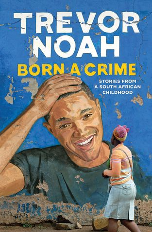

Summarry Of Born A Crime With relation To Daily Lives

The book sets the stage for understanding South Africa’s history and its impact on the present.
He introduces the dominant tribes of South Africa, the Xhosa, and Zulu, to provide a brief
understanding of his family’s background. He vividly describes the contrasting characteristics
of these tribes and her mom, a Xhosa, and her husband, a Zulu. This history is for understanding
Noah’s childhood and the era of apartheid. Noah emphasizes the European colonizers’ use of
Christianity to restructure South Africa’s people, traditions, languages, and geography. and how
it affected her mom’s Christian faith. Relating it to the present lives religions are there and
some of the people find it very commanding to go to church every day. Racism is still shown today
We see Noah’s personal experiences growing up during the apartheid. We see that Trevor’s
existence was illegal under the apartheid laws during the year 1984. His mother had to sacrifice
and navigate the dangers of being seen in public with her son, who was considered mixed-race.
Apartheid is seen in our current lives where Parents fall in love with their kids who have money
and leave out the poor ones. This is a challenge whereby the child named poor will have low
self-esteem. Another aspect is that apartheid is seen in economic exploitation where the poor
get few wages which cannot sustain them but the rich have more than enough to sustain them for
even three months. This is not quite unfair since resources should be given equally.
 Home
My Mentor
Goals
Achievements
To Do List
Home
My Mentor
Goals
Achievements
To Do List